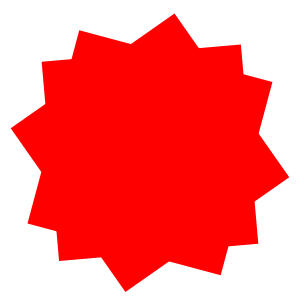

Pseudo Elements
OPDRACHT 7
de opdracht
De laatste opdracht vergt wat creativiteit. Zie het onderstaande voorbeeld en maak het na.

de uitvoering
de HTML
<div class="ster"></div>
</div>
de CSS
.opdracht7 {
position: relative;
display: flex;
align-items: center;
justify-content: center;
width: 420px;
height: 420px;
border-style: solid;
border-width: 1px;
border-color: rgb(25, 82,76);
background-color: rgb(29, 39, 38);
}
.ster {
position: absolute;
width: 250px;
height: 250px;
background-color: cyan;
transform: rotate(10deg);
}
.ster::after {
content: '';
position: absolute;
width: 250px;
height: 250px;
background-color: cyan;
transform: rotate(40deg);
}
.ster::before {
content: '';
position: absolute;
width: 250px;
height: 250px;
background-color: cyan;
transform: rotate(70deg);
}